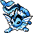

#134
Vaporeon
Water
Abilities: Water Absorb, Hydration, Rain Dish
Base stats BST 525
HP130
Attack65
Defense60
Speed65
Sp. Atk110
Sp. Def95
Evolution
None detected.
Level-up learnset
LevelMoveType
Lv. 1Water GunWater
Lv. 1Tail WhipNormal
Lv. 1GrowlNormal
Lv. 1TackleNormal
Lv. 1Double-EdgeNormal
Lv. 1CharmNormal
Lv. 1Take DownNormal
Lv. 1Baton PassNormal
Lv. 1BiteDark
Lv. 1SwiftNormal
Lv. 7Sand AttackGround
Lv. 10Quick AttackNormal
Lv. 13HazeIce
Lv. 16Water PulseWater
Lv. 19Aurora BeamIce
Lv. 25ScaldWater
Lv. 28ExtrasensoryPsychic
Lv. 31Acid ArmorPoison
Lv. 37Ice BeamIce
Lv. 43Hydro PumpWater
Wild locations
Not found in the parsed wild encounter tables.